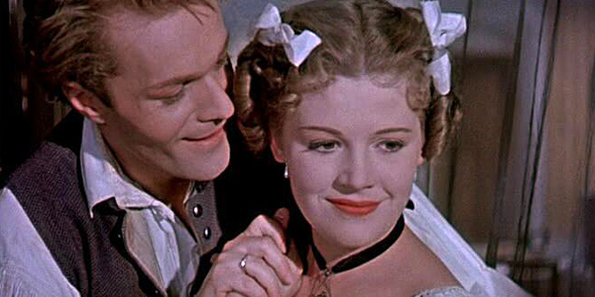

A Liliomfi Szigligeti Ede vígjátékából, Makk Károly rendezésében 1954-ben készített 109 perces magyar film.
"...a szabadság, a játékosság és az ifjúság nevében készült, a képmutatás ellenében. Nagy leleménye a biedermeier világ megteremtése, ahogyan a Kolozsvárott játszódó Szigligeti Ede-vígjátékot idillikus badacsonyi, balatonfüredi környezetbe helyezte." - Bacsó Péter
A 19. század elején egy vándorszínész társulat Balatonfüredre érkezik, hogy előadja a Rómeó és Júlia című tragédiát. A társulat fiatal színésze, Liliomfi első látásra szerelmes lesz Mariskába, aki a nevelőnőjével nézte meg az előadást. Liliomfi, az ünnepelt színész, valójában Szilvay professzor unokaöccse. A professzor látogatást tesz Camillánál, hogy magával vigye Mariskát, a gyámleányát, hogy férjhez adja egyetlen örököséhez, Szilvai Gyulához.
Badacsonyban, Kányai uram vendégfogadójában nagy a sürgés-forgás, a rengeteg vendég finomabbnál finomabb ételeket fogyaszt. Erzsi és Gyuri pincér szerelmesek egymásba, Erzsi apja, a fogadós azonban nem nézi jó szemmel a kialakuló kapcsolatot. Ő az ifjabbik Schnapsot szemelte ki a lánya jövendőbeliéül. Az ide hajóval érkező Liliomfi és Szellemfi menti meg a szerelmespárt, jól lejáratva – az itt még sosem látott – bécsi fiatalembert. Közben Szilvai professzorék is ide érkeznek postakocsival, Liliomfi pincérnek öltözve (és alaposan átmaszkírozva) próbál szerelmese közelébe férkőzni.
Szellemfi Camillának írat levelet Liliomfival, hogy eltávolítsa a szerelmesek közeléből, a professzort meg a kikapós Zengőbércziné közelébe csalják. Egy félreértés következtében Mariska hűtlennek hiszi kedvesét, ezért nem megy el a találkozóra. Camilla kisasszony és Zengőbércziné is panasszal fordul Pejachevich grófhoz: egy szatír garázdálkodik a környéken. Szilvai Tódor összefut az unokaöccsével, és a fogadó egyik szobájába zárja, rábízza a kulcsot Kányai Zsigmondra. Liliomfi (Szilvai Gyula) azonban az ablakon keresztül megszökik, a fogadós reggel a takarító Gyurival fut össze a szobában. A gazdag filiszter unokaöccsének véli az egri pincért, és most már ő sürgeti a lánya házasságát a vagyonosnak gondolt fiatalemberrel.
A professzort elfogják a pandúrok, vasra verve viszik a fogadóshoz, hogy az igazolja a kilétét. Ám Kányai is kiderítette, hogy valami hiba van a kréta körül, mert Gyuri bevallotta: ő a nép egyszerű, árva gyermek, nem rokona Szilvainak.
Liliomfi, Mariska, Szellemfi és a társulat tagjai szekereken tovább utaznak, míg Szilvai – kiszabadulván – hintón követi őket Camillával. A szerelmesek a szabad életet, a vándorszínészetet választják a várható örökség és a jólét helyett.
Forrás:Wikipedia